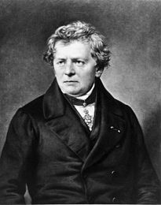
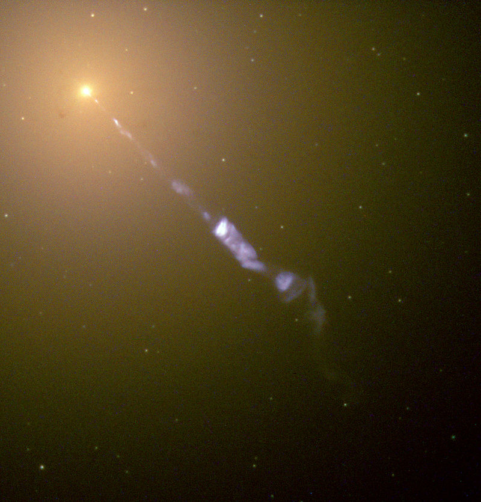

Гео́рг Си́мон Ом (нем. Georg Simon Ohm; 16 марта 1787, Эрланген, — 6 июля 1854, Мюнхен) — немецкий физик. Он вывел теоретически и подтвердил на опыте закон, выражающий связь между силой тока в цепи, напряжением и сопротивлением (известен как закон Ома). Его именем названа единица электросопротивления (Ом).

Георг Симон Ом родился 16 марта 1787 года в немецком Эрлангене (тогда часть Священной Римской империи). Мать Георга, Элизабет Мария, происходила из семьи портного, она умерла при родах, когда Георгу исполнилось девять лет. Отец его — слесарь Иоганн Вольфганг, весьма развитой и образованный человек, с детства занимался образованием сына, и самостоятельно преподавал ему математику, физику и философию. Он отправил Георга учиться в гимназию, которая курировалась университетом. По окончании курса в 1805 году Ом начал изучать математические науки в Эрлангенском университете. Уже после трёх семестров в 1806 году, бросив университет, принял место учителя в монастыре Готштадт (ныне в составе швейцарской коммуны Орпунд).
Узнать больше
Шно́белевские премии, Игнобелевские премии, Антинобелевские премии (англ. Ig Nobel Prize, от игры слов: англ. ignoble — «постыдный») — пародия на престижную международную награду — Нобелевскую премию. Десять Шнобелевских премий вручаются в начале октября, то есть в то время, когда называются лауреаты настоящей Нобелевской премии, — «за достижения, которые заставляют сначала засмеяться, а потом — задуматься» (first make people laugh, and then make them think). Премия учреждена Марком Абрахамсом и юмористическим журналом «Анналы невероятных исследований» в 1991 году. Премией награждают за необычные и остроумные исследования, чтобы привлечь внимание и подстегнуть интерес людей к науке, медицине и технологиям.
Шнобелевские премии присуждаются с 1991 года. За исключением семи премий, присуждённых в первый год, одной в 2005, двух в 2009, ещё одной в 2011 году и ещё двух в 2013, их вручали за реальные труды. Первые церемонии вручения премии проходили в Массачусетском технологическом институте. Сегодня это происходит в Гарварде накануне стокгольмской нобелевской церемонии. Награду лауреатам вручают настоящие нобелевские лауреаты.
Присуждение премии в некоторых случаях выражает завуалированную критику, как, например, в случаях с наградами за исследования по гомеопатии и с премиями, присуждёнными отделам образования штатов Канзас и Колорадо за их позицию по вопросу преподавания эволюции. В большинстве случаев эти награды привлекают внимание к научным работам, заголовок или тема которых содержит элементы смешного. Например, удостоились награды: исследование, показавшее, что присутствие людей сексуально возбуждает страусов; вывод о том, что чёрные дыры по своим параметрам подходят для расположения ада; работа, исследовавшая, будет ли инфицирована еда, упавшая на пол и пролежавшая там менее пяти секунд.
Узнать больше
Чёрная дыра́ — область пространства-времени[1], гравитационное притяжение которой настолько велико, что покинуть её не могут даже объекты, движущиеся со скоростью света, в том числе кванты самого света. Граница этой области называется горизонтом событий, а её характерный размер — гравитационным радиусом. В простейшем случае сферически симметричной чёрной дыры он равен радиусу Шварцшильда.

Теоретически возможность существования таких областей пространства-времени следует из некоторых точных решений уравнений Эйнштейна, первое из которых было получено Карлом Шварцшильдом в 1915 году. Точный изобретатель термина неизвестен, но само обозначение было популяризовано Джоном Арчибальдом Уилером и впервые публично употреблено в популярной лекции «Наша Вселенная: известное и неизвестное» (англ. Our Universe: the Known and Unknown) 29 декабря 1967 года[Комм 1]. Ранее подобные астрофизические объекты называли «сколлапсировавшие звёзды» или «коллапсары» (от англ. collapsed stars), а также «застывшие звёзды» (англ. frozen stars).
Узнать больше